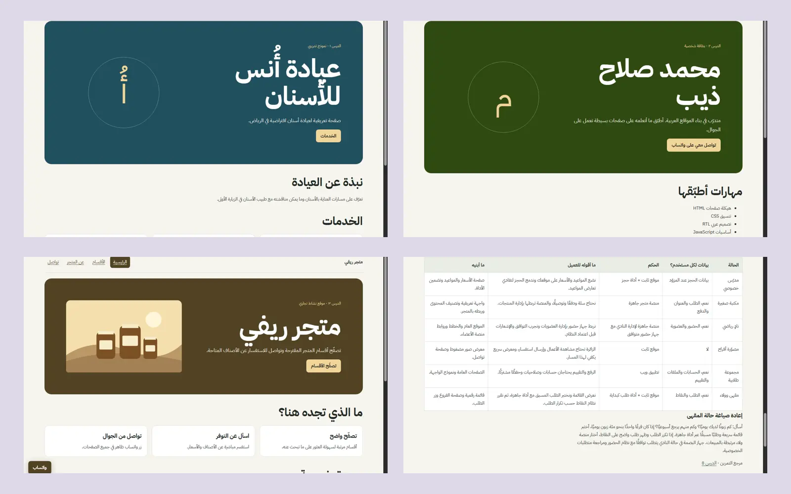

مشروع تدريبي
مشروع تدريبيعيادة أُنس للأسنان
كيف يتعرّف الزائر على الخدمات بسرعة؟ جمعت التعريف والخدمات والتواصل في صفحة عربية واحدة.
زيارة المشروعمعرض مشاريع محمد صلاح ذيب في مادة بناء ونشر المواقع بالذكاء الاصطناعي.
كل المشاريع
مشروع تدريبيكيف يتعرّف الزائر على الخدمات بسرعة؟ جمعت التعريف والخدمات والتواصل في صفحة عربية واحدة.
زيارة المشروع مشروع تدريبي
مشروع تدريبيكيف أشارك معلوماتي برابط واحد؟ فصلت الهيكل والتنسيق والسلوك ووضعت التواصل في قسم واضح.
زيارة المشروع مشروع تدريبي
مشروع تدريبيكيف يتصفح الزائر أقسام المتجر؟ بنيت أربع صفحات مترابطة بزر تواصل ثابت.
زيارة المشروع